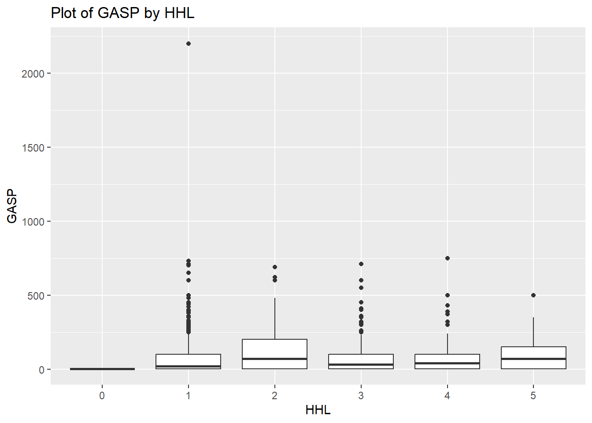
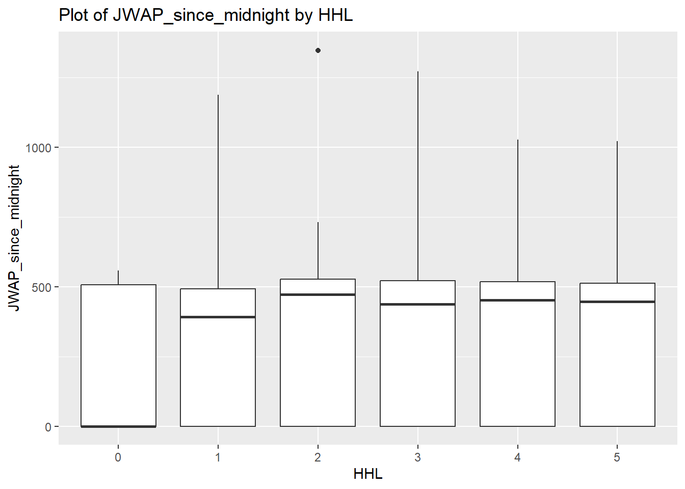

Warning: The `x` argument of `as_tibble.matrix()` must have unique column names if
`.name_repair` is omitted as of tibble 2.0.0.
ℹ Using compatibility `.name_repair`.
Wow, that was successful. So the key was to put the conditions in the query argument in the function GET().
Data Processing
Now we are going to construct a new function called getPUMS. https://api.census.gov/data/2022/acs/acs1/pums/variables.html Showed all the variable in the data set, which has 525 variables. It would be very hard to get all the variables, even just to a few lines of data. So we have to make clear of what variables to get in the very beginning of writing and adjusting the functions. Let’s first go with the original variables in the test sample and deal with the year issue.
Select functions enabling the selection of year.
We wanted to customize a function that enable custom-selection of Year of survey with default at 2022. That must have something to do with the URL we are inquiring. Let’s stick to the variable settings in the trial and play with the year of survey first.
They all worked. I also noticed that if year=2020, will return an error. It turned out the ACS 1-Year PUMS data for the year 2020 was not included in the default path because of smaller-than-previous sample issue.
Make a function that specifies the numeric values to be returned.
Next we wanted to make a function that solely tells which numeric values to be returned. Default was AGEP and PWGTP, with several options being available.
choosenum <-function (numvarinput) { numvar <-ifelse (numvarinput %in%c("AGEP", "GASP", "GRPIP", "JWAP", "JWMNP"),c(numvarinput, "PWGTP"), "error: numeric variable must match with exisiting numeric variable names")return (numvar)}choosenum ("AGEP")
[1] "AGEP"
choosenum ("")
[1] "error: numeric variable must match with exisiting numeric variable names"
It is weird no matter what I input, the choosenum function always returns an one-element vector. It turns out this is the setting of ifelse syntax. Try if-else sentence instead.
It returns a string of two characters and takes both my input and another variant PWGTP. Now try “attaching” the new function with our main function getPUMS ()
This is cool. This way ensures the numeric input must have a value. Now if you look closely at the objects returned by the getPUMSv2 function, these variables are all character variables. Make them numeric now!
We fixed the issue of column names in the below updated function getPUMSv2.1c
# WT: issue related to mutate() is fixed. Column names are good. Function is getPUMSv2.1cgetPUMSv2.1c <-function(year =2022, numvarinput ="AGEP"){ base_url <-paste0("https://api.census.gov/data/", as.character(year), "/acs/acs1/pums") query_params <-list(get =paste0(choosenum(numvarinput)[1],",",choosenum(numvarinput)[2]),SCHL ="24",key ="41b1ae36641c0a01c8cf9a48396a6c82ab8f6d9c") PUMScust <- httr::GET(url = base_url, query = query_params) PUMScust_parsed <-fromJSON(rawToChar(PUMScust$content)) PUMScust_tibble <-as_tibble(PUMScust_parsed)# Address the error where the first row of PUMScust_tibble is mistakenly considered data, which should be the column names.# Set first row as column names# Function "unlist" turns the first row of data into a vector.colnames(PUMScust_tibble) <-as.character(unlist(PUMScust_tibble[1,]))# Remove the first row PUMScust_tibble <- PUMScust_tibble[-1,]# convert column to appropriate data type (int) PUMScust_tibble <-type.convert(PUMScust_tibble, as.is =TRUE)# create a column with numeric value for PWGTP (double) PUMScust_tibble <-mutate (PUMScust_tibble, PWGTP_n =as.numeric(PUMScust_tibble$PWGTP))return(head(PUMScust_tibble,9))}getPUMSv2.1c(2022, "GASP")
We noticed that there is a redundant column caused by mutate function, which we will drop later. Now go ahead to test other numeric variables to see if they work.
The problem is the time is changed into the correct format. Need to think of ways to decode the time code (see the last function getPUMSsum for a resolution)
Now, move on to the next topic.
Make a function that specifies the categorical variables to be returned.
Similarly, for categorical variables, we wanted to make a function that solely tells which character values to be returned. Default was SEX, with several options being available.
The previous code did not the correct factor. WT: We updated the above code as follows. Function is choosecatv2
# WT: modified the above code to turn variable into levels, one categorical variable must be returned. Level and label information is from the variable website, link provided in the project instructions.choosecatv2 <-function (catvarinput ="SEX"){if (catvarinput %in%c("FER", "HHL", "HISPEED", "JWTRNS", "SCH", "SCHL", "SEX")){ catvar <-switch(catvarinput,"SEX"=factor(c(1, 2), levels =c(1, 2), labels =c("Male", "Female")),"FER"=factor(c(1, 2), levels =c(1, 2), labels =c("Has given birth", "Has not given birth")),"HHL"=factor(c(1, 2, 3, 4, 5), levels =c(1, 2, 3, 4, 5),labels =c("English only", "Spanish", "Other Indo-European languages", "Asian/Pacific Island languages", "Other language")),"HISPEED"=factor(c(1, 2), levels =c(1, 2), labels =c("Yes", "No")),"JWTRNS"=factor(c(1, 2, 3, 4, 5, 6, 7, 8, 9, 10, 11, 12), levels =c(1, 2, 3, 4, 5, 6, 7, 8, 9, 10, 11, 12),labels =c("Car, truck, or van", "Bus", "Subway or elevated rail", "Long-distance train or commuter rail", "Light rail, streetcar, or trolley", "Ferryboat", "Taxicab", "Motorcycle", "Bicycle", "Walked", "Worked from home", "Other method")),"SCH"=factor(c(1, 2, 3), levels =c(1, 2, 3), labels =c("No, has not attended in the last 3 months", "Yes, public school or public college", "Yes, private school or college or home school")),"SCHL"=factor(c(1, 2, 3, 4, 5, 6, 7, 8, 9, 10, 11, 12, 13, 14, 15, 16, 17, 18, 19, 20, 21, 22, 23, 24), levels =c(1, 2, 3, 4, 5, 6, 7, 8, 9, 10, 11, 12, 13, 14, 15, 16, 17, 18, 19, 20, 21, 22, 23, 24), labels =c("No schooling completed", "Nursery school, preschool", "Kindergarten", "Grade 1", "Grade 2", "Grade 3", "Grade 4", "Grade 5", "Grade 6", "Grade 7", "Grade 8", "Grade 9", "Grade 10", "Grade 11", "12th grade - no diploma", "Regular high school diploma", "GED or alternative credential", "Some college, but less than 1 year", "1 or more years of college credit, no degree", "Associate's degree", "Bachelor's degree", "Master's degree", "Professional degree beyond a bachelor's degree", "Doctorate degree")) ) } else { catvar <-"Error: Invalid input variable" }return(catvar) }# calling the following function will return the details for the categorical variablechoosecatv2("HHL")
[1] English only Spanish
[3] Other Indo-European languages Asian/Pacific Island languages
[5] Other language
5 Levels: English only Spanish ... Other language
choosecatv2("SCHL")
[1] No schooling completed
[2] Nursery school, preschool
[3] Kindergarten
[4] Grade 1
[5] Grade 2
[6] Grade 3
[7] Grade 4
[8] Grade 5
[9] Grade 6
[10] Grade 7
[11] Grade 8
[12] Grade 9
[13] Grade 10
[14] Grade 11
[15] 12th grade - no diploma
[16] Regular high school diploma
[17] GED or alternative credential
[18] Some college, but less than 1 year
[19] 1 or more years of college credit, no degree
[20] Associate's degree
[21] Bachelor's degree
[22] Master's degree
[23] Professional degree beyond a bachelor's degree
[24] Doctorate degree
24 Levels: No schooling completed Nursery school, preschool ... Doctorate degree
Now let’s concatenate this sub function into the original function and setting up the default categorical variable input as “SEX”.
Now except for the variables not being categorical but character, all other requirements are there.
Update: We modified the above function as follows. Changed column vector to ‘factor’ type for categorical variables. Function is getPUMSv3b
# The function getPUMSv3 is modified as getPUMSv3b, as follows. Issues related to first row data and converting variable to categorical variable are addressed (SCHL = "24" was removed; did not see this requirement in the instructions. But then being added back - too long runtime)getPUMSv3b <-function (year =2022, numvarinput ="AGEP", catvarinput ="SEX") { base_url <-paste0 ("https://api.census.gov/data/", as.character(year), "/acs/acs1/pums") query_params <-list(get =paste0 (choosenum(numvarinput)[1],",",choosenum(numvarinput)[2],",",choosecat(catvarinput)),SCHL ="24",key ="41b1ae36641c0a01c8cf9a48396a6c82ab8f6d9c") PUMScust <- httr::GET(url = base_url, query = query_params) PUMScust_parsed <-fromJSON(rawToChar(PUMScust$content)) PUMScust_tibble <-as_tibble (PUMScust_parsed)colnames(PUMScust_tibble) <-as.character(unlist(PUMScust_tibble[1,])) PUMScust_tibble <- PUMScust_tibble[-1, ] PUMScust_tibble <-mutate(PUMScust_tibble, PWGTP_n =as.numeric(PUMScust_tibble$PWGTP))# directly change the column vector to 'factor' type without adding a column to the dataset PUMScust_tibble <- PUMScust_tibble %>%mutate(!!choosecat(catvarinput) :=as.factor(.[[choosecat(catvarinput)]])) PUMScust_tibble <- PUMScust_tibble %>%mutate(!!choosenum(numvarinput)[1] :=as.numeric(.[[choosenum(numvarinput)[1]]]))return (head(PUMScust_tibble))}getPUMSv3b(2022,"GASP","HHL")
We are interested in getting data with specific geographic levels and wanted to also specify the geographic items we are interested in (a specific region, district or state(s)). Checking the examples provided by the US census on the example URLs (https://api.census.gov/data/2022/acs/acs1/pums/examples.html):
To get the region-specific data: https://api.census.gov/data/2022/acs/acs1/pums?get=SEX,PWGTP,MAR&for=region:*&SCHL=24&key=YOUR_KEY_GOES_HERE.
To get the division-specific data: https://api.census.gov/data/2022/acs/acs1/pums?get=SEX,PWGTP,MAR&for=division:*&SCHL=24&key=YOUR_KEY_GOES_HERE
To get the state-specific data: https://api.census.gov/data/2022/acs/acs1/pums?get=SEX,PWGTP,MAR&for=state:*&SCHL=24&key=YOUR_KEY_GOES_HERE
It is easy to see the parameter here need to deal with is “for=XXX”, which is included in the argument “query” in the function GET(). Thus we could let the new function specify this part. But after playing with it for a while we figured out in the query_params, geographic option should be included in the “get=” argument instead of “for=” argument because in R for is designated for the loop.
We updated the above code as follows. Function getPUMSv4.0b
# WT: updates are mainly for address the data type convertinggetPUMSv4.0b <-function (year =2022, numvarinput ="AGEP", catvarinput ="SEX") { base_url <-paste0 ("https://api.census.gov/data/", as.character(year), "/acs/acs1/pums") query_params <-list(get =paste0 (choosenum(numvarinput)[1],",",choosenum(numvarinput)[2],",",choosecat(catvarinput),",","REGION",",","ST",",","DIVISION"),SCHL ="24",key ="41b1ae36641c0a01c8cf9a48396a6c82ab8f6d9c") PUMScust <- httr::GET(url = base_url, query = query_params) PUMScust_parsed <-fromJSON(rawToChar(PUMScust$content)) PUMScust_tibble <-as_tibble (PUMScust_parsed)colnames(PUMScust_tibble) <-as.character(unlist(PUMScust_tibble[1,])) PUMScust_tibble <- PUMScust_tibble[-1, ]# this is to add a column and change the value type to numeric PUMScust_tibble <-mutate(PUMScust_tibble, PWGTP_n =as.numeric(PUMScust_tibble$PWGTP))# directly change the column vector to 'factor' type without adding a column to the dataset PUMScust_tibble <- PUMScust_tibble %>%mutate(!!choosecat(catvarinput) :=as.factor(.[[choosecat(catvarinput)]])) PUMScust_tibble <- PUMScust_tibble %>%mutate(!!choosenum(numvarinput)[1] :=as.numeric(.[[choosenum(numvarinput)[1]]]))return (head(PUMScust_tibble))}getPUMSv4.0b(2022,"GASP","HHL")
For the ease of exercising, I directly input the level of geography in the previous function. Now we want to build a function to let user select geographic level as well as specify the region, division or state. Let’s make a small function first.
Now that we have the function to specify geographic level we want to display, integrate in the main function. Note that the default was “of All”, which we interpret as all geographic levels.
WT: Updated the above code as follows. Function “getPUMSv4.1b”
SS: Changes including finalizing the tables and setting up a default output of all geographic level for this function.
# WT: updated the code to "getPUMSv4.1b", but we did not see "All" in the variable list, only "region", "ST", ...# SS: Change the default input of geographic level into "state". Default = "all" is just asking to output all geolevel, but it is tricky to make this happen.getPUMSv4.1b <-function (year =2022, numvarinput ="AGEP", catvarinput ="SEX", geolvlinput ="all") {if (geolvlinput %in%c("REGION", "DIVISION","ST")) {base_url <-paste0 ("https://api.census.gov/data/", as.character(year), "/acs/acs1/pums") query_params <-list(get =paste0 (choosenum(numvarinput)[1],",",choosenum(numvarinput)[2],",",choosecat(catvarinput),",",choosegeolvl(geolvlinput)),SCHL ="24",key ="41b1ae36641c0a01c8cf9a48396a6c82ab8f6d9c")}elseif (geolvlinput =="all") {base_url <-paste0 ("https://api.census.gov/data/", as.character(year), "/acs/acs1/pums") query_params <-list(get =paste0 (choosenum(numvarinput)[1],",",choosenum(numvarinput)[2],",",choosecat(catvarinput),",","REGION",",","ST",",","DIVISION"),SCHL ="24",key ="41b1ae36641c0a01c8cf9a48396a6c82ab8f6d9c")} PUMScust <- httr::GET(url = base_url, query = query_params) PUMScust_parsed <-fromJSON(rawToChar(PUMScust$content)) PUMScust_tibble <-as_tibble (PUMScust_parsed)colnames(PUMScust_tibble) <-as.character(unlist(PUMScust_tibble[1,])) PUMScust_tibble <- PUMScust_tibble[-1, ]# this is to add a column and change the value type to numeric PUMScust_tibble <-mutate(PUMScust_tibble, PWGTP_n =as.numeric(PUMScust_tibble$PWGTP))# directly change the column vector to 'factor' type without adding a column to the dataset PUMScust_tibble <- PUMScust_tibble %>%mutate(!!choosecat(catvarinput) :=as.factor(.[[choosecat(catvarinput)]])) PUMScust_tibble <- PUMScust_tibble %>%mutate(!!choosenum(numvarinput)[1] :=as.numeric(.[[choosenum(numvarinput)[1]]]))return (head(PUMScust_tibble))}getPUMSv4.1b(2022,"GASP","HHL", "DIVISION")
Now let’s enable an option to allow user to subset the data based on geographic information, and it must be on API. Considering the argument of query is essentially a list, which specifies “SCHL =”24”, we could try specify here as well.
getPUMSv4.2<-function (year =2022, numvarinput ="AGEP", catvarinput ="SEX", geolvlinput ="all", geospctinput) {if (geolvlinput =="REGION") {base_url <-paste0 ("https://api.census.gov/data/", as.character(year), "/acs/acs1/pums") query_params <-list(get =paste0 (choosenum(numvarinput)[1],",",choosenum(numvarinput)[2],",",choosecat(catvarinput),",",choosegeolvl(geolvlinput)),SCHL ="24",REGION =as.character (geospctinput),key ="41b1ae36641c0a01c8cf9a48396a6c82ab8f6d9c")}elseif (geolvlinput =="DIVISION") {base_url <-paste0 ("https://api.census.gov/data/", as.character(year), "/acs/acs1/pums") query_params <-list(get =paste0 (choosenum(numvarinput)[1],",",choosenum(numvarinput)[2],",",choosecat(catvarinput),",",choosegeolvl(geolvlinput)),SCHL ="24",DIVISION =as.character (geospctinput),key ="41b1ae36641c0a01c8cf9a48396a6c82ab8f6d9c")}elseif (geolvlinput =="ST") {base_url <-paste0 ("https://api.census.gov/data/", as.character(year), "/acs/acs1/pums") query_params <-list(get =paste0 (choosenum(numvarinput)[1],",",choosenum(numvarinput)[2],",",choosecat(catvarinput),",",choosegeolvl(geolvlinput)),SCHL ="24",ST =as.character (geospctinput),key ="41b1ae36641c0a01c8cf9a48396a6c82ab8f6d9c")}elseif (geolvlinput =="all") {base_url <-paste0 ("https://api.census.gov/data/", as.character(year), "/acs/acs1/pums") query_params <-list(get =paste0 (choosenum(numvarinput)[1],",",choosenum(numvarinput)[2],",",choosecat(catvarinput),",","REGION",",","ST",",","DIVISION"),SCHL ="24",key ="41b1ae36641c0a01c8cf9a48396a6c82ab8f6d9c")} base_url <-paste0 ("https://api.census.gov/data/", as.character(year), "/acs/acs1/pums") query_params <-list(get =paste0 (choosenum(numvarinput)[1],",",choosenum(numvarinput)[2],",",choosecat(catvarinput),",",choosegeolvl(geolvlinput)),ST ="09",SCHL ="23",key ="41b1ae36641c0a01c8cf9a48396a6c82ab8f6d9c") PUMScust <- httr::GET(url = base_url, query = query_params) PUMScust_parsed <-fromJSON(rawToChar(PUMScust$content)) PUMScust_tibble <-as_tibble (PUMScust_parsed)colnames(PUMScust_tibble) <-as.character(unlist(PUMScust_tibble[1,])) PUMScust_tibble <- PUMScust_tibble[-1, ]# this is to add a column and change the value type to numeric PUMScust_tibble <-mutate(PUMScust_tibble, PWGTP_n =as.numeric(PUMScust_tibble$PWGTP))# directly change the column vector to 'factor' type without adding a column to the dataset PUMScust_tibble <- PUMScust_tibble %>%mutate(!!choosecat(catvarinput) :=as.factor(.[[choosecat(catvarinput)]])) PUMScust_tibble <- PUMScust_tibble %>%mutate(!!choosenum(numvarinput)[1] :=as.numeric(.[[choosenum(numvarinput)[1]]]))return (head (PUMScust_tibble))}getPUMSv4.2(2022,"GASP","HHL","state","09")
It throws out an error. Looks like geographic-related variables could not be subset in the same way as other variables. But how to solve the ‘for’ problem? We figured out later a backtick (`) should be used to avoid confusion.
# WT: updated the above function as follows.# SS: 1. There is a special thing about the level "ST". as a variable it is called "ST", but in the "for" call it is called "state". It was a pity they were not the same.# SS: 2. Modified the tibble coding part. Use |> instead of %>% and adding more string to keep the coding compact. Dropped the SCHL function that is previously encoded to speed upgetPUMSv4.3<-function (year =2022, numvarinput ="AGEP", catvarinput ="SEX", geolvlinput ="all", geospecinput) { base_url <-paste0("https://api.census.gov/data/", as.character(year), "/acs/acs1/pums")#If you requested to see such geographic level data, then need to get the geo data for the corresponding levels and also you could search specific code based on the requested geographic level.if (geolvlinput %in%c("REGION", "DIVISION")) { query_params <-list(get =paste0 (choosenum(numvarinput)[1],",",choosenum(numvarinput)[2],",",choosecat(catvarinput),",",choosegeolvl(geolvlinput)),`for`=paste0 (geolvlinput,":",geospecinput),SCHL ="24",key ="41b1ae36641c0a01c8cf9a48396a6c82ab8f6d9c") }elseif (geolvlinput =="ST") { query_params <-list(get =paste0 (choosenum(numvarinput)[1],",",choosenum(numvarinput)[2],",",choosecat(catvarinput),",","ST"),`for`=paste0 ("state",":",geospecinput),SCHL ="24",key ="41b1ae36641c0a01c8cf9a48396a6c82ab8f6d9c") }elseif (geolvlinput =="all") { query_params <-list(get =paste0 (choosenum(numvarinput)[1],",",choosenum(numvarinput)[2],",",choosecat(catvarinput),",","REGION",",","ST",",","DIVISION"),SCHL ="24",key ="41b1ae36641c0a01c8cf9a48396a6c82ab8f6d9c")} PUMScust <- httr::GET(url = base_url, query = query_params) PUMScust_parsed <-fromJSON(rawToChar(PUMScust$content)) PUMScust_tibble <-as_tibble (PUMScust_parsed)colnames(PUMScust_tibble) <-as.character(unlist(PUMScust_tibble[1,])) PUMScust_tibble <- PUMScust_tibble[-1, ] PUMScust_tibble <- PUMScust_tibble |>mutate(PWGTP :=as.numeric(PUMScust_tibble$PWGTP)) PUMScust_tibble <- PUMScust_tibble %>%mutate(!!choosecat(catvarinput) :=as.factor(.[[choosecat(catvarinput)]])) PUMScust_tibble <- PUMScust_tibble %>%mutate(!!choosenum(numvarinput)[1] :=as.numeric(.[[choosenum(numvarinput)[1]]])) |>select (1:4)return (head (PUMScust_tibble))}getPUMSv4.3(2022,"GASP","HHL","ST","37")
In the follwoing function “getPUMSsum”, we get the class ‘census’ assigned to tibble at the end, to get things ready for the next function ‘summary.census’. Tied up a couple of loose ends. We specify that state = “09” in the API query. According to the updated instructions, our group only works the subset data where ST = ‘09’ (Connecticut). We also included a column of ‘year’. Finally, we convert JWAP or JWDP to the minutes since midnight (column names are JWAP_since_midnight, JWDP_since_midnight, respective) with reasonable accuracy.
# This function is updated to include 'census' class assigned to the tibble getPUMSsum <-function (years =c(2022), numvarinput ="AGEP", catvarinput ="SEX", geolvlinput, filter_value =NULL, filter_column =NULL) {# create an empty list multiple_years <-list()for (year in years) { base_url <-paste0 ("https://api.census.gov/data/", as.character(year), "/acs/acs1/pums") ST ="09" query_params <-list(get =paste0 (choosenum(numvarinput)[1],",",choosenum(numvarinput)[2],",",choosecat(catvarinput),",",choosegeolvl(geolvlinput)),`for`="state:09", # add the state filter to the query, only pull ST = "09" data, Connecticutkey ="41b1ae36641c0a01c8cf9a48396a6c82ab8f6d9c" )# optional filteringif (!is.null(filter_value) &!is.null(filter_column)) { query_params[[filter_column]] <- filter_value } PUMScust <- httr::GET(url = base_url, query = query_params) PUMScust_parsed <-fromJSON(rawToChar(PUMScust$content)) PUMScust_tibble <-as_tibble (PUMScust_parsed)colnames(PUMScust_tibble) <-as.character(unlist(PUMScust_tibble[1,])) PUMScust_tibble <- PUMScust_tibble[-1, ]# this is to add a column and change the value type to numeric PUMScust_tibble <- PUMScust_tibble |>mutate(PWGTP :=as.numeric(PUMScust_tibble$PWGTP)) PUMScust_tibble <- PUMScust_tibble %>%mutate(!!choosecat(catvarinput) :=as.factor(.[[choosecat(catvarinput)]])) PUMScust_tibble <- PUMScust_tibble %>%mutate(!!choosenum(numvarinput)[1] :=as.numeric(.[[choosenum(numvarinput)[1]]])) |>select (1:4) |>mutate (YEAR =as.character (year)) multiple_years[[as.character(year)]] <- PUMScust_tibble } allyeardata <-bind_rows(multiple_years) current_classes <-class(allyeardata)class(allyeardata) <-c("census", current_classes)# to convert the JWDP and JWAP to the minutes since midnight, roughlyif("JWAP"%in%colnames(allyeardata)){ allyeardata <- allyeardata %>%mutate(JWAP_since_midnight =ifelse(JWAP !=0, 2+(JWAP-1)*5, 0)) }if("JWDP"%in%colnames(allyeardata)){ allyeardata <- allyeardata %>%mutate(JWDP_since_midnight =ifelse(JWDP !=0, 15+9*(JWDP-1), 0)) }# we remove the 'head', so that the function returns a complete tibble datasetreturn(allyeardata)}# following call worksgetPUMSsum(c(2021,2022),"GASP","HHL","ST",filter_value="24", filter_column ="SCHL" )
# get the data and give it a name, which will be the first argument in the Function "summary.census"PUMS_tibble_census <-getPUMSsum(c(2021,2022),"GASP","HHL","ST",filter_value="24", filter_column ="SCHL" )PUMS_tibble_census1 <-getPUMSsum(c(2021,2022),"GRPIP","HHL","ST",filter_value="24", filter_column ="SCHL" )PUMS_tibble_census2 <-getPUMSsum(c(2021,2022),"JWAP","HHL","ST",filter_value="24", filter_column ="SCHL" )
We developed a function “summary.census” below that produces means and standard deviations for numeric variables and counts for categorical variables SS: To reflect changes in eleminating unecessary columns, a few changes were made.
# This function will use the output of getPUMSsum function as one of the argument, and summarize weighted mean, std. dev, and the countsummary.census <-function(tibble_data, num_vars=NULL, cat_vars=NULL) {# if numeric variable, then put it in a vector num_vars. We leave "PWGTP" out, it's the weighting info used in summaryif(is.null(num_vars)){ num_vars <-names(tibble_data)[sapply(tibble_data, is.numeric) &names(tibble_data) !="PWGTP" ] }# if categorical variable, then put it in a vector cat_varsif(is.null(cat_vars)){ cat_vars <-names(tibble_data)[sapply(tibble_data, is.factor)] } result_list <-list() weight_vector <- tibble_data$PWGTPfor (num_var in num_vars){ numeric_vector <- tibble_data[[num_var]]# calculate mean and standard deviation for numeric variables. If it is JWAP, JWDP, JWMNP, then we only include nonzero values because the individual does not travel to work (WFH, etc) if it is zero. sample_mean <-if(num_var %in%c("JWAP", "JWDP", "JWMNP")){ valid_indices <- numeric_vector !=0sum(numeric_vector[valid_indices] * weight_vector[valid_indices]) /sum(weight_vector[valid_indices]) }else {sum(numeric_vector*weight_vector)/sum(weight_vector) } sample_stddev <-if(num_var %in%c("JWAP", "JWDP", "JWMNP")){ valid_indices <- numeric_vector !=0sqrt(sum(numeric_vector[valid_indices]^2*weight_vector[valid_indices])/sum(weight_vector[valid_indices])-sample_mean^2) }else {sqrt(sum(numeric_vector^2*weight_vector)/sum(weight_vector)-sample_mean^2) }# calculate sample mean for numeric variable# sample_mean <- sum(numeric_vector*weight_vector)/sum(weight_vector)# calculate sample std dev for numeric variable# sample_stddev <- sqrt(sum(numeric_vector^2*weight_vector)/sum(weight_vector)-sample_mean^2)# return the values as a named list result_list[[paste0(num_var, "_mean")]] <- sample_mean result_list[[paste0(num_var, "_sd")]] <- sample_stddev }for (cat_var in cat_vars){ cat_table <-table(tibble_data[[cat_var]]) result_list[[paste0(cat_var, "_counts")]] <- cat_table }return(result_list)}summary_stat <-summary.census(PUMS_tibble_census)summary_stat
Next, We create a generic plot() function for a census class tibble
#| echo: true#| eval: false# This code chunk creates a generic plot() function for a census class tibble, with three arguments. library(ggplot2)
Warning: package 'ggplot2' was built under R version 4.3.3
plot.census <-function(tibble_data, cat_var, num_var){ plot <-ggplot((tibble_data), aes(x =get(cat_var), y =get(num_var), weight = PWGTP)) +geom_boxplot()+labs(title =paste("Plot of", num_var, "by", cat_var)) +xlab(cat_var) +ylab(num_var)print(plot)}# call the function and return a plotplot.census(PUMS_tibble_census, "HHL", "GASP")
Warning: Computation failed in `stat_boxplot()`.
Caused by error in `loadNamespace()`:
! namespace 'Matrix' 1.5-4.1 is already loaded, but >= 1.6.0 is required

plot.census(PUMS_tibble_census1, "HHL", "GRPIP")
Warning: Computation failed in `stat_boxplot()`.
Caused by error in `loadNamespace()`:
! namespace 'Matrix' 1.5-4.1 is already loaded, but >= 1.6.0 is required
Warning: Computation failed in `stat_boxplot()`.
Caused by error in `loadNamespace()`:
! namespace 'Matrix' 1.5-4.1 is already loaded, but >= 1.6.0 is required

Interesting topics to investigate using the census data and the API and summary functions.
Topic - How does gross rent as a % of household income vary among different language speaking families? (We were more interested in finding income distribution among different attributes. However, the GRPIP variable seems not working in API function. Will revisit) Update: Works like a charm!
After several trial and error in each step explained in the instructions, we were able to finalize a function “getPUMSsum” that does what are required in the project. To verify the functionality, the function was called with various combinations of options, and we were able to obtain the summary statistics and the plot from the data retrieved.